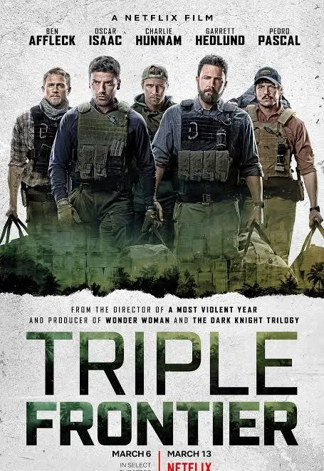
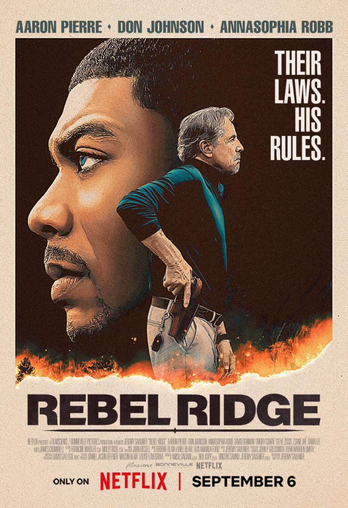
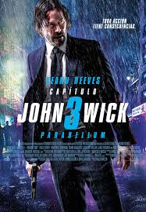

EL BOTIN
Un grupo de policías de Miami descubre un alijo de millones en efectivo,
lo que provoca desconfianza al enterarse de la enorme incautación, lo que
les hace cuestionarse en quién confiar.
- Género: Thriller, Acción, Crimen
- Año: 2026
- Duración: 1h 53min
- Director: Joe Carnahan
- Productores/as: Artists Equity, Netflix
- Calificación general: 6.8/10
- Clasificación por edad: +16
- Plataformas: Netflix
Tráiler
REPARTO
MATT DAMON
BEN AFFLECK

STEVEN YEUN

TEYANA TAYLOR

SASHA CALLE
RESEÑAS DESTACADAS
Calificación: 7.0 / 10
CineMiami dice:
Buen thriller, aunque previsible.
La tensión entre los personajes está bien lograda,
pero el guion recurre a giros demasiado convencionales.
Damon y Affleck elevan el nivel con sus actuaciones.
Calificación: 8.0 / 10
ThrillerFan dice:
Un regreso sólido de Affleck y Damon.
La química entre ambos actores es palpable.
La atmósfera oscura y el suspenso funcionan muy bien.
Netflix acertó con este estreno.
Calificación: 6.0 / 10
CriticoAnon dice:
Entretenida pero olvidable.
La acción es correcta, pero nada memorable.
Se esperaba más profundidad en los personajes.
Calificación: 9.0 / 10
NeoCine dice:
Un thriller intenso y bien filmado.
La dirección de Carnahan logra un clima turbio y realista.
Las escenas de acción son tensas y bien ejecutadas.
Calificación: 6.0/ 10
FilmLover dice:
Correcta pero sin sorpresas.
Cumple como entretenimiento de viernes noche,
pero no deja huella.
RELACIONADOS

TRIPLE FRONTERA
Calificación: 6.4/10
DURACION: 2h 05min

REBEL RIDGE
Calificación: 6.2/10
DURACION: 2h 10min

JUEGO DE CRIMINALES
Calificación: 6.0/10
DURACION: 1h 55min
EL ROBO PERFECTO (DEN OF THIEVES)
Calificación: 7.0/10
DURACION: 2h 20min
